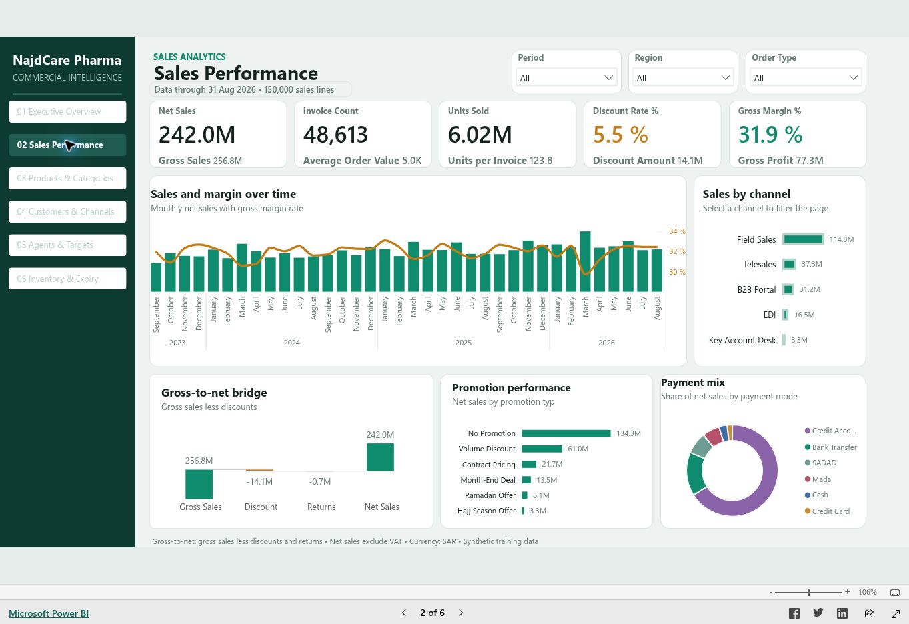
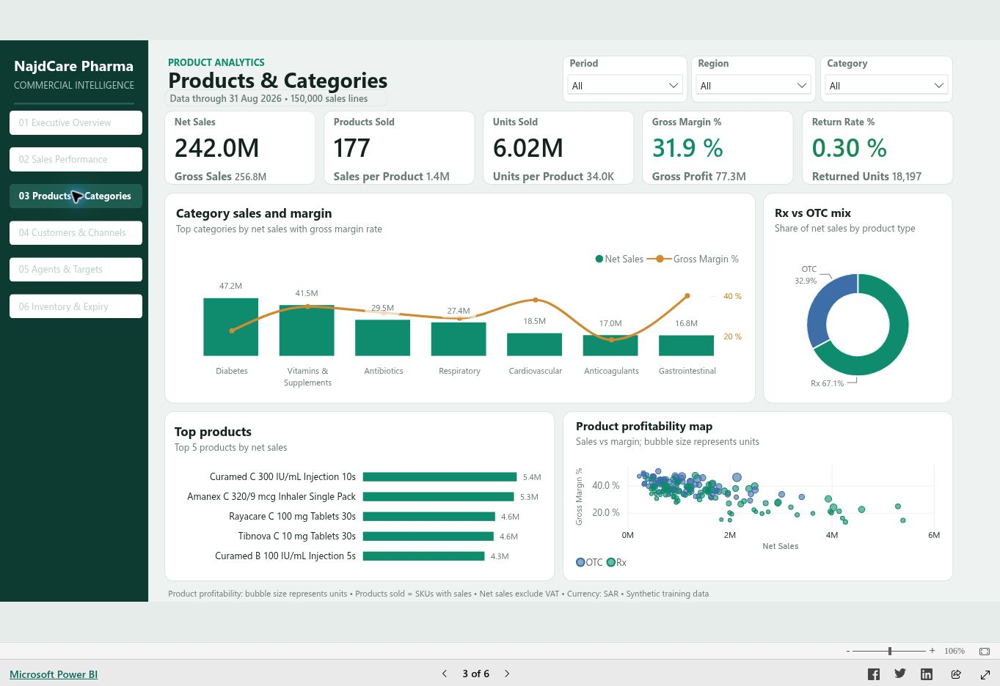
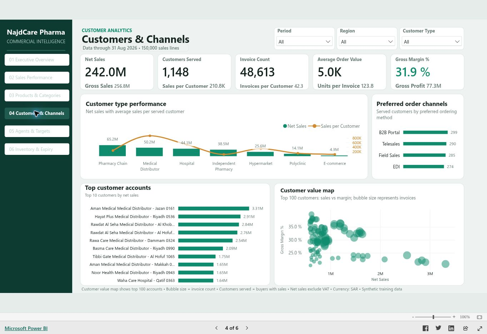
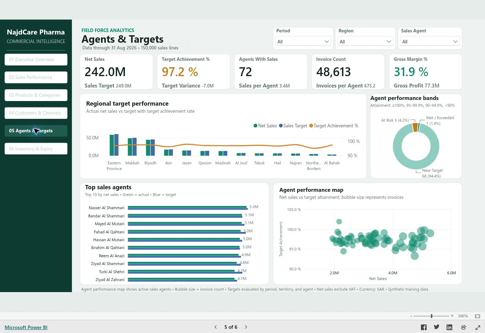
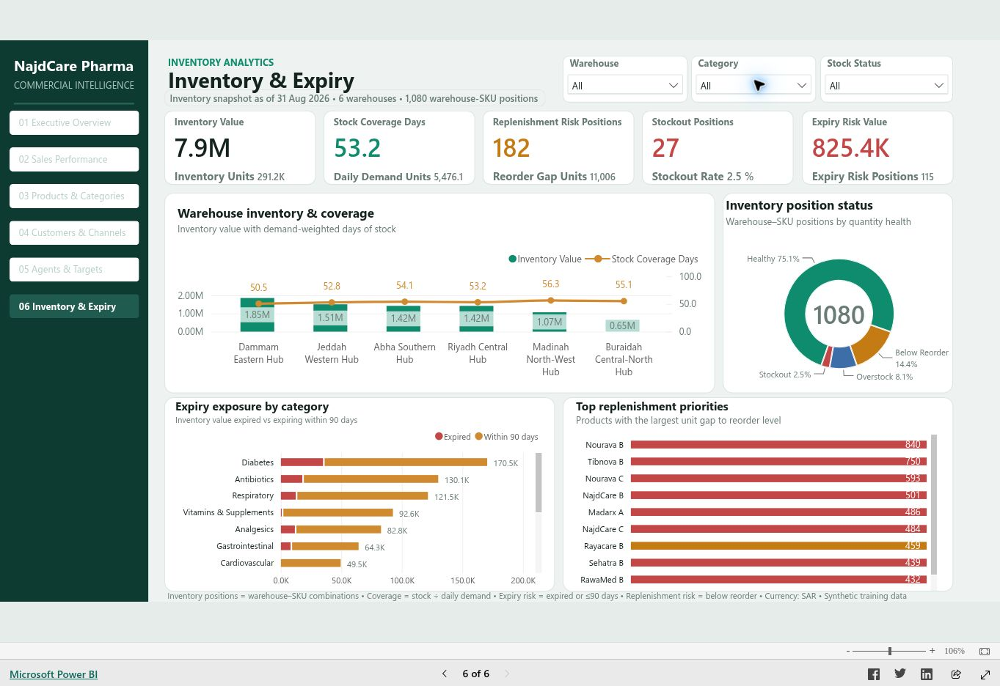

الأداء التجاري
هل تواكب المبيعات المستهدفات؟ وما المنتجات والعملاء والقنوات التي تسهم في الإيراد والهامش؟
المشروع الرئيسي · Power BI · تقرير تفاعلي
رؤية مترابطة للمبيعات والربحية والعملاء والمستهدفات ومخاطر المخزون لموزّع أدوية افتراضي في السعودية.
صُمّم المشروع حول الأسئلة التي يحتاج المدير التجاري أو مسؤول المبيعات أو محلل المخزون إلى فحصها.
هل تواكب المبيعات المستهدفات؟ وما المنتجات والعملاء والقنوات التي تسهم في الإيراد والهامش؟
أي المندوبين والمناطق يحتاج إلى متابعة؟ وكيف تغيّر الخصومات والمرتجعات وتركيبة العملاء تفسير المبيعات؟
أين يتركز نفاد المخزون وفجوات إعادة الطلب والأصناف القريبة من انتهاء الصلاحية؟ وما أولويات المراجعة؟
استخدمت خبرتي في عمليات الصيدليات لصياغة أسئلة الأعمال، وجهزت جداول المصادر ودمجتها في Power Query، ونظمت نموذج البيانات، وبنيت مقاييس DAX وصفحات التقرير الست، ثم نشرت النتيجة مع توثيقها. يهدف العمل إلى تقديم طريقة أوضح للتحليل؛ ولا يدّعي تحقيق أثر تجاري مقاس في شركة فعلية.
ابدأ بالنظرة العامة، ثم تنقل بين الصفحات من القائمة اليسرى داخل التقرير. هذا العرض العام لا يحتاج إلى حساب Power BI. واجهة التقرير الأصلية بالإنجليزية، والشرح الكامل بالعربية أدناه.

هذه معاينة. حمّل التقرير لاستخدام الفلاتر والتنقل بين صفحاته.
على الهاتف، يمنح الوضع الأفقي أو خيار فتح التقرير كاملًا مساحة أكبر للرسوم. إذا ظل الإطار فارغًا، استخدم الرابط المباشر أعلاه. اقرأ دليل الاستخدام ↓
عند تحليل تحقيق المستهدف، اترك فلتر منطقة العميل المنطقة (Region) على الكل (All). ترتبط المستهدفات بالشهر ومندوب المبيعات؛ فلتر منطقة العميل لا يخفض المستهدف في هذه النسخة. المخزون لقطة في تاريخ محدد، والتعرض لانتهاء الصلاحية مؤشر فحص يعتمد على أقرب تاريخ صلاحية.
افتح كل صفحة أدناه للاطلاع على صورتها الفعلية، والسؤال الذي تجيب عنه، والفلاتر المتاحة، ومثال للاستكشاف.
الفترة · منطقة العميل
ابدأ بصافي المبيعات ومجمل الربح والهامش وتحقيق المستهدف ومعدل المرتجعات بالوحدات. تساعد الاتجاهات الشهرية ومساهمة المناطق والفئات وحسابات العملاء على تحديد مواضع البحث التالية.
اقرأ خط الأساس الكلي، ثم قارن المبيعات والهامش بين مناطق العملاء. عند مقارنة المستهدف، اترك Region على All، واستخدم صفحة Agents & Targets لتحليل المندوبين.
انتبه إلى السياق. مستوى تفصيل المستهدف هو شهر × مندوب مبيعات. لا يخفض فلتر منطقة العميل مقام نسبة تحقيق المستهدف في هذه النسخة.
جرّب في التقرير التفاعلي ↑
الفترة · منطقة العميل · نوع الطلب
تتبّع الانتقال من المبيعات الإجمالية إلى الصافية عبر الخصومات والمرتجعات، وقارن المبيعات الشهرية بالهامش، واستكشف القنوات والعروض ووسائل الدفع. يضيف عدد الفواتير ومتوسط قيمة الطلب سياقًا للمعاملات.
اختر نوع طلب أو قناة، وافحص الهامش إلى جانب الإيراد، ومرّر المؤشر لقراءة المقاييس المساندة. استخدم رسم الانتقال لتفسير الفرق بين المبيعات الإجمالية والصافية.
انتبه إلى السياق. صافي المبيعات يستبعد ضريبة القيمة المضافة. مقارنة العروض وصفية، ولا تثبت أثر العرض الإضافي في المبيعات.
جرّب في التقرير التفاعلي ↑
الفترة · منطقة العميل · الفئة
قارن مبيعات الفئات وهامشها، ومزيج الأدوية بوصفة ودون وصفة، والمنتجات الأعلى أداءً، وخريطة ربحية المنتجات. تحدد الخريطة الموقع بالمبيعات والهامش، ويمثل حجم الفقاعة عدد الوحدات.
اختر فئة ومنتجًا مرتفع الإيراد، ثم افحص هامشه ومعدل مرتجعاته. ارتفاع مساهمة المنتج في المبيعات بداية للتحليل، ولا يكفي وحده للحكم على الربحية.
انتبه إلى السياق. يعدّ Products Sold المنتجات المختلفة التي سجلت مبيعات في السياق المختار: 177 في خط الأساس، من أصل 180 منتجًا في الجدول المرجعي.
جرّب في التقرير التفاعلي ↑
الفترة · منطقة العميل · نوع العميل
راجع العملاء الذين خُدموا وتكرار الفواتير وقيمة الطلب والهامش. يقدم أداء أنواع العملاء وقنوات الطلب المفضلة والحسابات الأعلى قيمة زوايا متكاملة لفهم قاعدة العملاء.
اختر نوع عميل، وقارن الإيراد بمجمل الهامش، ثم مرّر المؤشر على خريطة قيمة العملاء لفحص تفاصيل الحسابات. يمثل حجم الفقاعة عدد الفواتير.
انتبه إلى السياق. تعرض خريطة القيمة أعلى 100 حساب. قناة الطلب المفضلة صفة للعميل، بينما قناة البيع الفعلية صفة للمعاملة في صفحة المبيعات.
جرّب في التقرير التفاعلي ↑
الفترة · مندوب المبيعات · منطقة العميل
قارن المبيعات الفعلية بالمستهدف، وافحص الانحراف، واستكشف مناطق المندوبين وأفضل المندوبين وخريطة أدائهم. تميز فئات الأداء بين مستويات تحقيق المستهدف.
اترك Region على All، واختر سنة ومندوبًا، واقرأ نسبة التحقيق مع الانحراف عن المستهدف. استخدم رسم مناطق المندوبين لإجراء مقارنة إقليمية على أساس مستهدف متسق.
انتبه إلى السياق. فئات المشروع: 100% فأكثر تحقيق أو تجاوز؛ من 95% إلى أقل من 100% قريب من الهدف؛ من 90% إلى أقل من 95% معرض للخطر؛ أقل من 90% حرج. هذه قواعد المشروع وليست معيارًا عامًا للصناعة.
جرّب في التقرير التفاعلي ↑
المستودع · الفئة · حالة المخزون
استخدم لقطة المخزون لمراجعة القيمة والتغطية والمواقع التي تقل عن حد إعادة الطلب ونفاد المخزون والتعرض لانتهاء الصلاحية. تساعد مقارنات المستودعات ومزيج الحالات وأولويات التوريد على تحديد الخطوة التالية.
اختر مستودعًا، وافحص مواقع النفاد والنقص عن حد إعادة الطلب، ثم قارن مخاطر الصلاحية حسب الفئة. استخدم فلتر حالة المخزون لتركيز المراجعة ثم امسحه للعودة إلى خط الأساس الكامل.
انتبه إلى السياق. هذه لقطة بتاريخ 31 أغسطس 2026. يشير التعرض للصلاحية إلى القيمة الكاملة لموقع مخزني أقرب تاريخ صلاحية فيه خلال 90 يومًا أو مضى بالفعل؛ ولا يمثل تقديرًا للشطب على مستوى الدفعات.
جرّب في التقرير التفاعلي ↑اتبع هذه الخطوات قبل التجربة بفلاتر أكثر تفصيلًا. اقرأ الفلاتر المختارة كلما فسّرت رقمًا.
حمّل التقرير وافتح النظرة العامة · Executive Overview. ابدأ مع Period وRegion على الكل (All). يعرض خط الأساس نحو 242.0 مليون ريال صافي مبيعات، وهامشًا 31.9%، وتحقيقًا للمستهدف 97.2%.
استخدم Sales Performance لمحركات الإيراد، وProducts & Categories لمزيج المنتجات، وCustomers & Channels لقيمة الحسابات، وAgents & Targets للمستهدفات، وInventory & Expiry لمخاطر المخزون.
استخدم القوائم أعلى التقرير. اختر سنة أو فئة لتحديد نطاق السؤال. قد تسمح الفلاتر باختيارات متعددة؛ راجع الاختيار المعروض قبل المقارنة. تستخدم صفحة المخزون المستودع والفئة وحالة المخزون بدلًا من فترة المبيعات.
على الكمبيوتر، مرّر المؤشر على الأعمدة أو النقاط أو القطاعات لعرض قيم إضافية. يفلتر اختيار عنصر في الرسم أو يبرز العناصر المرتبطة به. تحتفظ بعض المقارنات بسياقها الأصلي عمدًا.
اضغط العنصر المختار في الرسم مرة أخرى لإلغاء اختياره. وفي الفلاتر، استخدم زر مسح الاختيار إن توفر أو Select all. زر إعادة ضبط التقرير أعلاه يعيد تحميل التقرير من صفحته الأولى.
افتح Products & Categories ← اختر السنة والفئة ← قارن المبيعات بالهامش ← مرّر المؤشر على منتج مرتفع الإيراد. افحص ما إذا كان الحجم أو السعر أو المزيج يحتاج إلى مزيد من التحليل.
افتح Agents & Targets ← اترك Region على All ← اختر السنة والمندوب ← قارن المبيعات الفعلية وتحقيق المستهدف والانحراف. استخدم رسم مناطق المندوبين للمقارنة الإقليمية.
افتح Inventory & Expiry ← اختر المستودع ← راجع النفاد والنقص عن حد إعادة الطلب ← افحص رسم إعادة التوريد ← امسح فلتر الحالة قبل مقارنة إجمالي التعرض للصلاحية.
يفصل النموذج بين المبيعات على مستوى المعاملة، والمستهدفات الشهرية للمندوبين، ولقطة المخزون؛ حتى تُفسر مقاييس كل منها بصورة صحيحة.
استيراد جداول ملف Excel الاصطناعي، وترقية العناوين، وتحديد أنواع الأعمدة، وتوحيد بعض مسميات العرض. ثم إلحاق استعلامات مبيعات 2023–2026 في جدول Pharma_Sales.
ربط المبيعات والمستهدفات والمخزون بالأبعاد المناسبة. يتضمن النموذج المفحوص 11 علاقة نشطة من متعدد إلى واحد، وكلها بفلترة في اتجاه واحد.
استخدام الجمع والعد الفريد والنسب والترتيب والتحقق من السياق. تشمل التعريفات السبعون أيضًا تسميات ومساعدات للتنسيق الشرطي.
تنظيم ست صفحات، ونشر التقرير التفاعلي في Power BI Service، وشرح تعريفات المقاييس وقواعد التفسير وحدود لقطة المخزون هنا.
| البيانات | الجدول | الصفوف | مستوى التفصيل | التفسير |
|---|---|---|---|---|
| سطر مبيعات | Pharma_Sales | 150,000 | سطر واحد من فاتورة | التاريخ والعميل والمنتج والمندوب والمستودع |
| مستهدفات المبيعات | Sales_Targets | 2,592 | شهر واحد × مندوب واحد | التاريخ ومندوب المبيعات |
| لقطة المخزون | Inventory | 1,080 | مستودع واحد × صنف واحد في تاريخ اللقطة | المنتج والمستودع والمورّد |
| المنتجات | Linked_Drugs | 180 | منتج / صنف واحد | 177 منتجًا لها مبيعات مسجلة |
| العملاء | العملاء | 1,200 | حساب واحد | 1,148 عميلًا لهم مبيعات؛ تستخدم جغرافيا العملاء CityID |
| مندوبو المبيعات | Sales_Agents | 72 | مندوب واحد | منطقة المندوب أساس المقارنة الإقليمية للمستهدفات |
| المورّدون / المستودعات | Suppliers / Warehouses | 40 / 6 | مورّد واحد / مستودع واحد | بيانات مرجعية لتحليل المخزون |
| الجغرافيا / التواريخ | Geography / Date | 27 / 1,096 | مدينة واحدة / يوم تقويمي واحد | الفترة: 1 سبتمبر 2023 – 31 أغسطس 2026 |
يفلتر التاريخ المبيعات والمستهدفات. يفلتر المنتج والمستودع المبيعات والمخزون. يفلتر المندوب المبيعات والمستهدفات. تفلتر جغرافيا العميل العملاء ثم المبيعات، ويفلتر المورّد المخزون.
المستهدفات غير موزعة على منتجات أو عملاء بعينهم. يُرجع مقياس الصلاحية قيمة فارغة للاختيارات التي يفحصها صراحة على المنتج أو العميل. لا يشمل ذلك فلتر جغرافيا العميل المنفصل، لذا اتركه على All عند مقارنة المستهدفات.
المخزون وضع في تاريخ محدد، وليس سجل حركات. لا يرتبط ببُعد تاريخ المبيعات؛ لذلك لا يعبّر اختيار سنة المبيعات عن مخزون تاريخي.
| مفتاح البُعد | المفتاح المرتبط |
|---|---|
| Date.DateKey | Pharma_Sales.DateKey |
| Date.DateKey | Sales_Targets.TargetMonthDateKey |
| Customers.CustomerID | Pharma_Sales.CustomerID |
| Linked_Drugs.DrugID | Pharma_Sales.DrugID |
| Sales_Agents.SalesAgentID | Pharma_Sales.SalesAgentID |
| Warehouses.WarehouseID | Pharma_Sales.WarehouseID |
| Geography.CityID | Customers.CityID |
| Linked_Drugs.DrugID | Inventory.DrugID |
| Suppliers.SupplierID | Inventory.SupplierID |
| Warehouses.WarehouseID | Inventory.WarehouseID |
| Sales_Agents.SalesAgentID | Sales_Targets.SalesAgentID |
تستخدم قيم خط الأساس أدناه كل بيانات المبيعات أو لقطة المخزون كاملة. قد تقرّب بطاقات التقرير هذه القيم. K تعني ألفًا وM تعني مليونًا.
| المقياس | طريقة الحساب | كيفية التفسير | خط الأساس |
|---|---|---|---|
| صافي المبيعات | Σ NetSalesExclVATSAR | المبيعات بعد الخصومات والمرتجعات، باستبعاد ضريبة القيمة المضافة. مقياس الإيراد الرئيسي. | 241,967,508.82 ر.س |
| المبيعات الإجمالية | Σ GrossSalesSAR | الإيراد قبل الخصومات والمرتجعات. | 256,789,996.85 ر.س |
| مجمل الربح | Σ GrossProfitSAR | مجموع مجمل الربح المخزن لسطور المبيعات المختارة. لا يساوي صافي الربح. | 77,293,391.47 ر.س |
| هامش مجمل الربح | مجمل الربح ÷ صافي المبيعات | نسبة مجموعين؛ لا تستخدم متوسط نسب الهامش على مستوى الصفوف. | 31.94% |
| عدد الفواتير | عدّ InvoiceNumber دون تكرار | الفواتير الفريدة، وليس عدد سطور المبيعات. | 48,613 |
| متوسط قيمة الطلب | صافي المبيعات ÷ عدد الفواتير | متوسط الإيراد لكل فاتورة في السياق المختار. | 4,977.42 ر.س |
| معدل الخصم | قيمة الخصومات ÷ المبيعات الإجمالية | نسبة الإيراد الإجمالي الممنوحة كخصومات. | 5.49% |
| معدل المرتجعات | الوحدات المرتجعة ÷ الوحدات المبيعة | معدل يعتمد على الوحدات؛ لا يساوي قيمة المرتجعات مقسومة على الإيراد. | 0.30% |
| المنتجات المبيعة / العملاء المخدومون | عدّ المعرّفات الفريدة في Pharma_Sales | يقيس النشاط في الفترة المختارة، وليس جميع السجلات المرجعية. | 177 منتجًا / 1,148 مشتريًا |
| تحقيق المستهدف | صافي المبيعات ÷ مستهدف المبيعات | قارن على نطاق متوافق من حيث الفترة ومندوب المبيعات أو منطقته. | 97.18% |
| الانحراف عن المستهدف | صافي المبيعات − مستهدف المبيعات | القيمة السالبة تعني أن المبيعات أقل من المستهدف. | −7,019,083.84 ر.س |
| قيمة المخزون | Σ InventoryValueSAR | القيمة المخزنة في مواقع المستودع–الصنف المختارة في تاريخ اللقطة. | 7,920,403.77 ر.س |
| تغطية المخزون | وحدات المخزون ÷ متوسط وحدات الطلب اليومي | تغطية مرجحة بالطلب عبر المواقع المختارة، وليست متوسط نسب تغطية المواقع منفردة. | 53.18 يومًا |
| مخاطر إعادة التوريد | عدّ المواقع التي يقل مخزونها عن حد إعادة الطلب | تشمل المواقع ذات المخزون الصفري. تُعدّ المواقع لا المنتجات الفريدة. | 182 موقعًا مخزنيًا |
| فجوة إعادة الطلب | مجموع القيم الموجبة لـ(حد إعادة الطلب − المخزون) | الوحدات اللازمة للوصول إلى حدود إعادة الطلب المسجلة. لا تمثل توصية مكتملة بأمر شراء. | 11,006 وحدات |
| معدل نفاد المخزون | المواقع ذات المخزون الصفري ÷ المواقع المؤهلة | يزيل المقام فلتر Stock Status مع الاحتفاظ بالفلاتر الأخرى المنطبقة. | 27 / 1,080 = 2.50% |
| التعرض لانتهاء الصلاحية | قيمة المواقع ذات المخزون الموجب وأقرب صلاحية خلال 90 يومًا أو قبل ذلك | يشمل المخزون المنتهي والقريب من الانتهاء خلال 90 يومًا. يشير إلى القيمة الكاملة للموقع، ولا يحسب خسائر الدفعات. | 825,385.46 ريال / 115 موقعًا |
Gross Margin % =
DIVIDE ( [Gross Profit], [Net Sales] )تحافظ هذه الصيغة على الهامش المرجح للمبيعات المختارة بدلًا من متوسط نسب السطور.
Invoice Count =
DISTINCTCOUNT ( Pharma_Sales[InvoiceNumber] )قد تتضمن الفاتورة سطورًا متعددة، لكنها تظل فاتورة واحدة.
Stock Coverage Days =
DIVIDE ( [Inventory Units], [Daily Demand Units] )تستخدم النتيجة إجمالي المخزون والطلب المختارين، فيحصل الموقع الأعلى طلبًا على وزنه المناسب.
تصف هذه الملاحظات بيانات المشروع الاصطناعية دون فلاتر. الخطوات المقترحة أسئلة تحليلية تالية، ولا تمثل نتائج تحققت في شركة فعلية.
صافي المبيعات 241.97 مليون ريال مقابل مستهدف 248.99 مليون ريال، بفجوة تبلغ 7.02 مليون ريال.
تفسر خصومات بقيمة 14.10 مليون ريال ومرتجعات بقيمة 0.73 مليون ريال الفرق بين المبيعات الإجمالية والصافية.
هناك 182 موقع مستودع–صنف أقل من حد إعادة الطلب، منها 27 موقعًا بلا مخزون. وتبلغ الفجوة الإجمالية للوصول إلى الحدود المسجلة 11,006 وحدات.
يوجد 115 موقعًا بمخزون موجب أقرب صلاحية فيه خلال 90 يومًا أو انتهت بالفعل. يشمل المؤشر القيمة المخزنية الكاملة لهذه المواقع.
يوضح البورتفوليو المفيد ما جرى فحصه، وما الذي يحتاج إلى تطوير إضافي.
تشمل هذه الفحوص النسخة المخزنة وتفاعلات مختارة؛ ولا تمثل تحققًا شاملًا من كل سياقات DAX أو سيناريوهات التقارير.
لا. هي بيانات تدريب اصطناعية لموزّع أدوية سعودي افتراضي. يوضح المشروع طرق التحليل وتفسير الأعمال، ولا يعرض أداء صيدليات الدواء أو أي جهة عمل فعلية.
يتحقق التقرير من صلاحية بعض اختيارات المنتجات والعملاء. تعني الشرطة أن مقارنة المستهدف غير متاحة في ذلك السياق، ولا تعني صفرًا. لا تغطي الحماية كل الفلاتر الممكنة؛ راجع إرشادات المستهدفات أعلاه.
تزيل تسميات نطاق التغطية الفلاتر عمدًا لوصف مجموعة البيانات واللقطة كاملة. وتظل مؤشرات الأداء تستجيب للفلاتر المنطبقة عليها.
نعم. يستخدم التقرير العام مساحة تصميم سطح المكتب داخل الإطار. استخدم الوضع الأفقي أو افتح التقرير كاملًا لمساحة أكبر. تتكيف دراسة الحالة وصور الصفحات والدليل المحيط به مع الشاشات الصغيرة.
يشرح قاموس المقاييس الحسابات الرئيسية، ويسرد قسم نموذج البيانات العلاقات ومستوى التفصيل، ويضم مرجع DAX المرتبط جميع صيغ المقاييس السبعين من مصدر المشروع.
خبرة صيدلانية. أسئلة أعمال. تحليل عملي.
متاح لفرص تحليل البيانات وذكاء الأعمال والتقارير وتحليلات الرعاية الصحية والتجزئة.